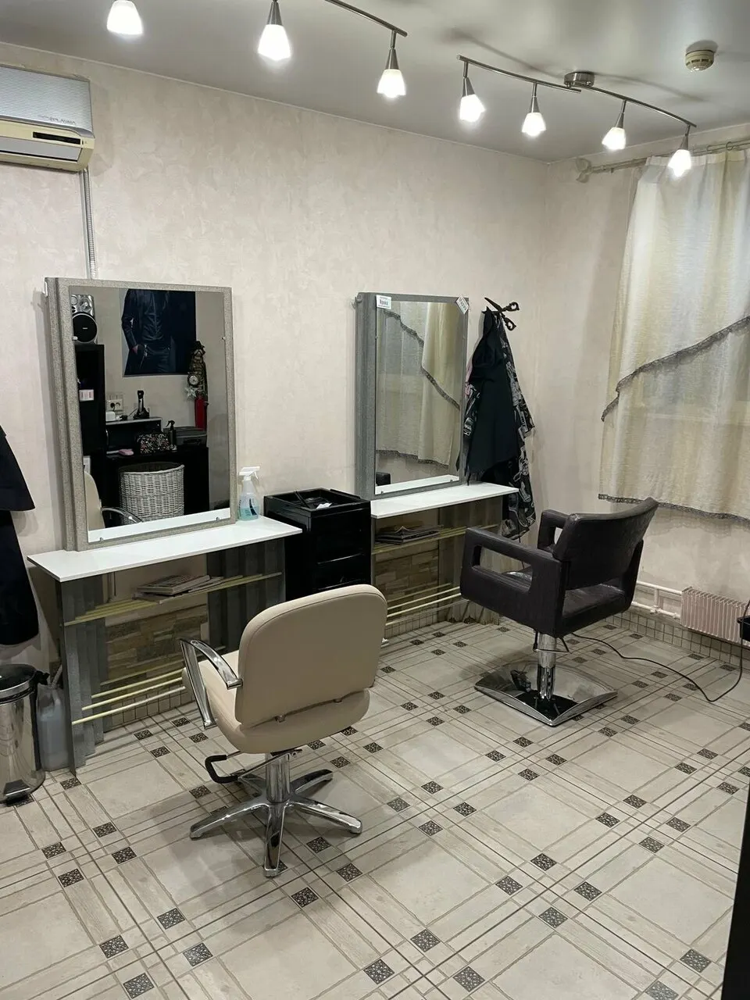
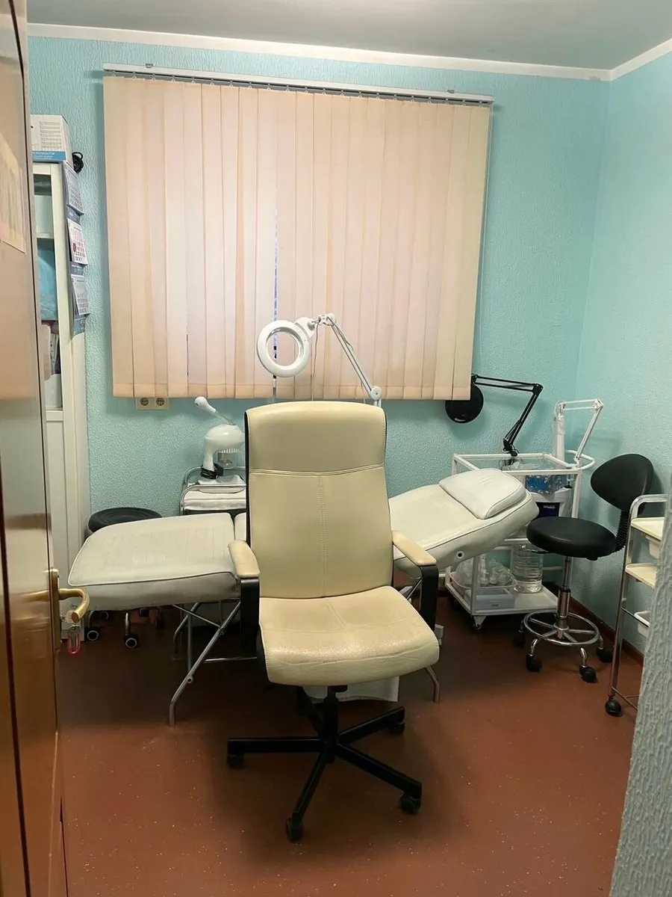
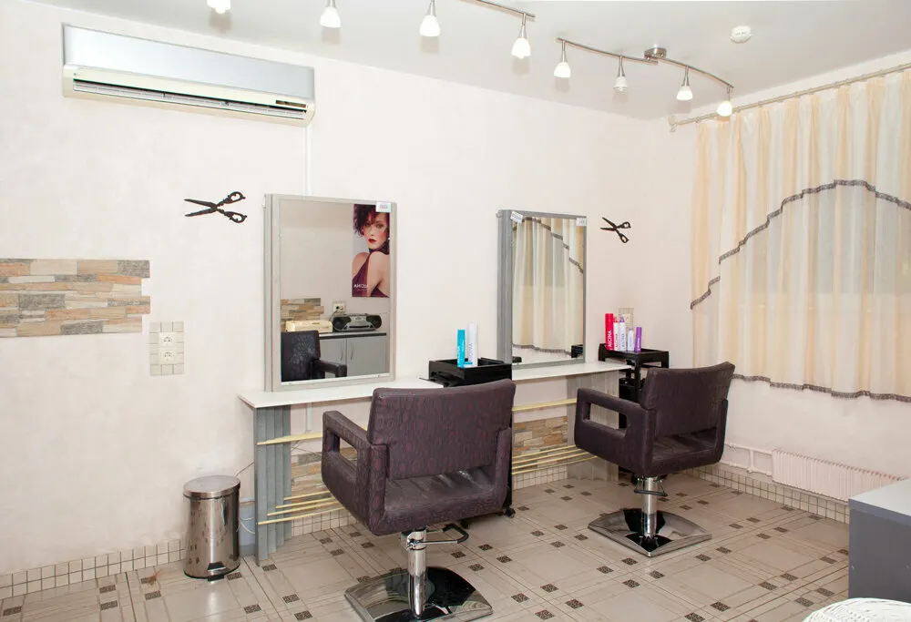
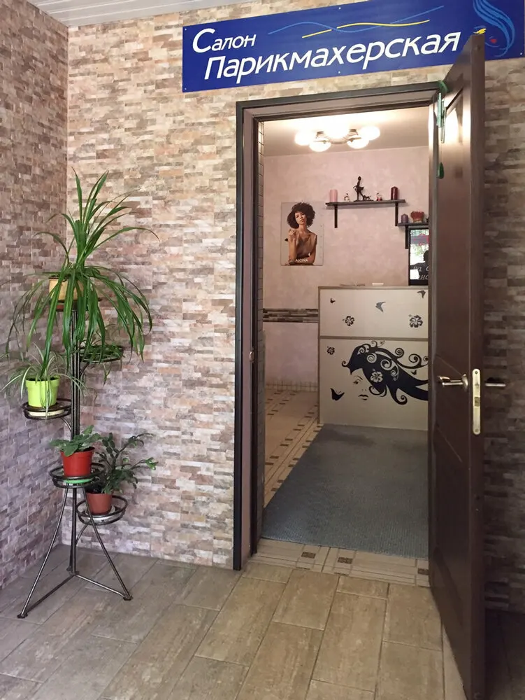

Подолог · маникюр и педикюр · женский и мужской зал
Подолог и маникюр в Отрадном – здоровые ногти и стопы
Вросший ноготь, онихолизис, ногти после лет гель-лака – к подологу. Рядом маникюр, педикюр, женский и мужской зал.
- Рейтинг 4,8 на Яндекс.Картах
- Пн–сб 09:30–21:00, вс до 19:00
- Декабристов, 11, второй этаж

Цены – до записи, а не на кассе
Прайс с карточки салона на Яндекс.Картах, обновлён 4 сентября.
Подология, маникюр, педикюр
- Педикюр подологическийдля ног с проблемами4 500 ₽
- Маникюраппаратный, классический или комбинированный1 200 ₽
- Маникюр комплексныйснятие, маникюр, база, гель-лак, крем2 400 ₽
- Педикюр аппаратный или комбинированный2 300 ₽
- Педикюр классическийс водой2 200 ₽
Женский зал
- Стрижка + мытьё + сушка, короткие1 200 ₽
- Стрижка + мытьё + сушка, средние1 500 ₽
- Окрашивание в один тон, короткие2 200 ₽
- Окрашивание в один тон, средние2 900 ₽
- Контуринг, средние4 500 ₽
- Стрижка дошкольная650 ₽
Мужской зал
- Стрижка + мытьё + сушка900 ₽
- Стрижка машинкой600 ₽
- Усы и борода500 ₽
Брови, лицо, воск
- Форма бровей500 ₽
- Окрашивание бровей хной800 ₽
- Массаж лица классический1 800 ₽
- Гликолевый пилинг с уходом3 300 ₽
- Воск: классическое бикини1 600 ₽
Цены на длинные волосы – уточнить при записи.
Как записаться
- 01
Выбираете услугу и время
В форме наверху страницы – чтобы прикинуть цену и удобный день.
- 02
Записываетесь на Яндекс.Картах
Кнопка откроет карточку салона, там – онлайн-запись со свободным временем.
- 03
Или звоните
+7 (499) 204-14-53. К подологу – опишите проблему, подскажем, на что записаться.
- 04
Приходите на Декабристов, 11
Второй этаж, вход с улицы по лестнице. Рядом парковка.



Почему к нам возвращаются
Подолог, а не только мастер маникюра
В отзывах: восстановили ногти после 10 лет гель-лака, помогли там, где в поликлинике предлагали снять ноготь.
Инструменты вскрывают при вас
Так пишут клиентки, которые ходят в салон несколько лет.
Если жжёт лампа – пудровое покрытие
Альтернатива гель-лаку для тех, кому неприятно держать руки в лампе.
Семейный салон
Женский и мужской зал, детская стрижка – в отзывах к одному мастеру ходят муж и сын больше 20 лет.
Отзывы с Яндекс.Карт
«Прекрасный салон и атмосфера. Чисто случайно решила обратиться к подологу Эка. К сожалению в поликлинике было решение одно снимать ноготь и не один. Мастер сразу увидел проблему с ногтями. И сразу начали лечение. Всё аккуратно, стерильно, не больно. Назначила лекарства и все объяснила, как что. Также сделала отличный маникюр. Рекомендую»
Александра Калиниченко · 28 мая
«Хочу отметить работу в этом салоне подолога Черний Эка. Хожу к этому мастеру более года, обратилась с проблемой восстановления ногтей после более 10 летнего использования гель-лаков. Проблему устранили! Ногти укрепили, восстановили и теперь продолжаю посещать процедуры , делаю просто гигиенический педикюр без покрытия.»
Мария Р. · 3 июля 2025
«Хожу в салон несколько лет. К мастерам Марина и Экка. Мастера профессионалы своего дела, приветливые, доброжелательные, аккуратные. Маникюр и педикюр делают всегда качественно , инструменты вскрываются при мне. Обслуживание всегда на высоте. Мастера замечательные !»
Елена П. · 18 ноября 2025
Отзывы с карточки на Яндекс.Картах, без правок.
Частые вопросы
Как вас найти?
Москва, улица Декабристов, 11, второй этаж. Вход с улицы по лестнице.
С какими проблемами можно к подологу?
В отзывах – вросший ноготь, онихолизис, ногти после многих лет гель-лака, проблемные стопы. Позвоните и опишите, что беспокоит, – подскажем, на что записаться.
Можно маникюр без гель-лака?
Да, есть пудровое покрытие – его выбирают, если при гель-лаке жжёт лампа.
До скольки вы работаете?
С понедельника по субботу – с 09:30 до 21:00, в воскресенье – до 19:00.
Запишитесь онлайн или позвоните
- Адрес
- улица Декабристов, 11, этаж 2, Москва
- Часы
- Пн–сб 09:30–21:00, вс 09:30–19:00
- Телефон
- +7 (499) 204-14-53